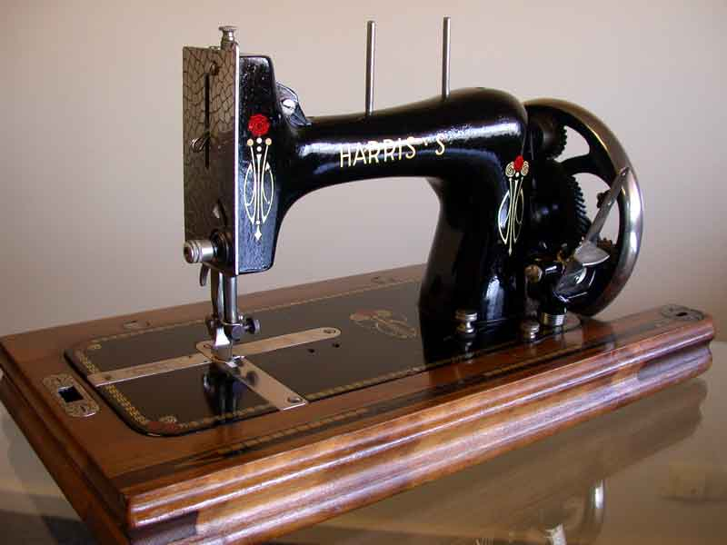
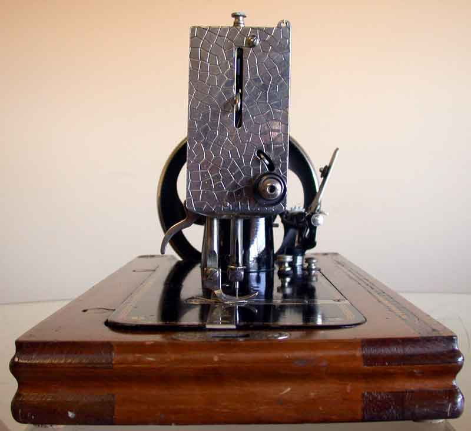
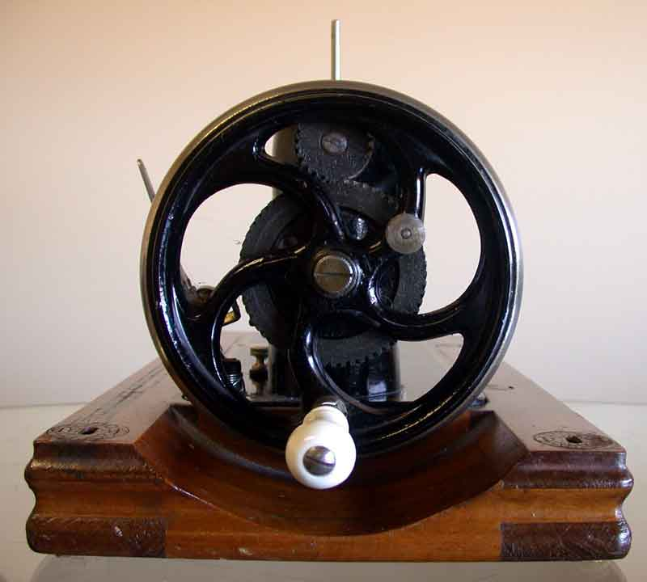
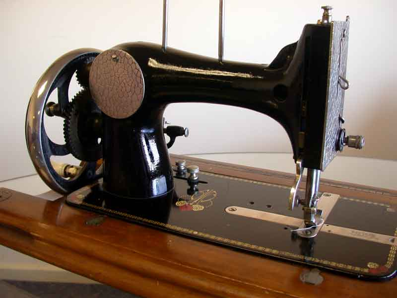
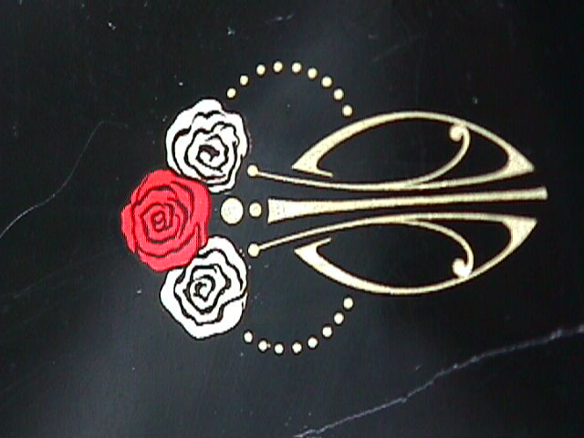
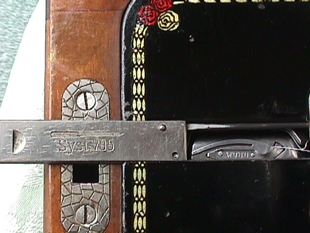
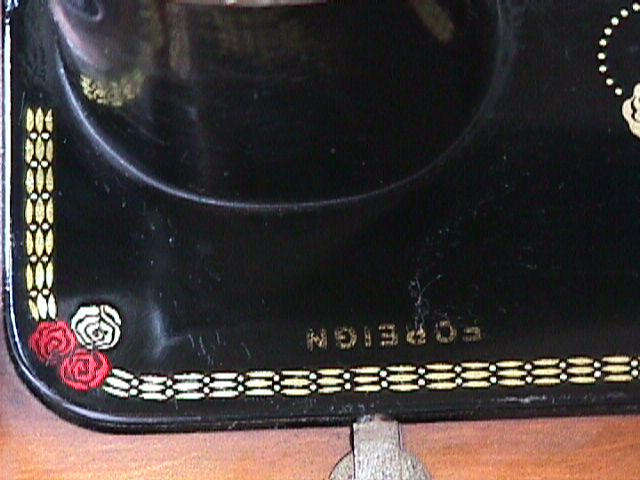

THE NEEDLEBAR
W. J. Harris
Maker: Haid & Neu
Model: Harris 'S' Saxonia
Front View / Faceplate & Needle Bar / Crank Mechanism
Rear View / Bed Decal / Arm & Pillar / Shuttle Slide & Shuttle Race
All pictures courtesy of Bernadette Dewhurst-Phillips
Front View






Shuttle Slide and Shuttle Race


©
Alan Quinn 2008. All Rights Reserved
This page may not be reproduced or distributed in part or in whole without the prior written permission of the copyright owner